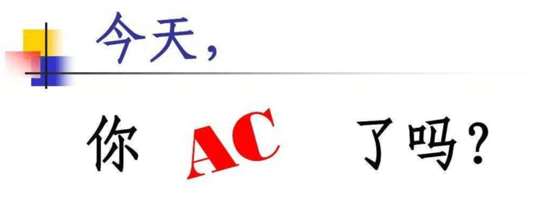

ACM简介 |
ACM（美国计算机协会）是一家科教性质的协会，旨在联合全球计算机领域的教学人员、研究人员和从业人员，开展行业交流活动、共享资源和解决业界难题。凭借绝对的领导地位，ACM始终致力于推行最高行业标准，表彰杰出技术人才，加强计算机行业的整体队伍建设。ACM通过为成员提供终生学习、职业发展及与专业人士联谊的机会，支持其在各自的专业领域取得长足进步。 |
竞赛特点
大赛现场
1.参赛队伍最多由三名参赛队员组成。
2.竞赛中命题10题左右，试题描述为英文，比赛时间为5个小时，前四个小时可以实时看到排名，最后一小时封榜，无法看到排名。
3.竞赛可以使用的语言：Java, C, C++, Kotlin 和 Python。
4.重点考察选手的算法和程序设计能力，不考察实际工程中常用的系统编程，多线程编程等等；
5.选手可携带任何非电子类资料，包括书籍和打印出来的程序等，部分赛区会对选手携带的纸质资料做限制。
6.评委负责将结果（正确或出错的类型）通过网络尽快返回给选手，除此之外不提供任何额外帮助；
7.每个题目对应一种颜色的气球，通过该题目的队伍会得到对应颜色气球。每道题目第一支解决掉它的队还会额外获得一个“FIRST PROBLEM SOLVED”的气球。
赛事构成
赛事由各大洲区域预赛和全球总决赛两个阶段组成:决赛安排在每年的3-5月举行，而区域预赛一般安排在上一年的9-12月举行。原则上一个大学在一站区域预赛最多可以有3支队伍，但只能有一支队伍参加全球总决赛。
入围世界总决赛名额（WF Slots）分为参与名额（Participation Slots）、奖牌名额（Medal Bonus Slots）和其他红利名额（Other Bonus Slots）三类。其中参与名额是从ICPC总部分配给各大洲区的参与名额（ParticipationSlots）中，由各大洲洲区主席确定并分配给洲子赛区的部分，其中各预赛区第一名自动获得参加全球总决赛的资格；奖牌名额是ICPC总部根据上一年度总决赛结果直接分配给获得奖牌的特定学校的名额；其他红利名额是各大洲区主席从ICPC总部争取到的额外奖励名额。
全球总决赛第一名将获得奖杯一座。另外，成绩靠前的参赛队伍也将获得金、银和铜牌。而解题数在中等以下的队伍会得到确认但不会进行排名。
评分标准
竞赛进行5个小时，一般有7道或以上试题，由同队的三名选手使用同一台计算机协作完成。当解决了一道试题之后，将其提交给评委，由评委判断其是否正确。若提交的程序运行不正确，则该程序将被退回给参赛队，参赛队可以进行修改后再一次提交该问题。程序判定结果有如下7种：
1、Accepted. ——通过！(AC)
2、Wrong Answer.——答案错。(WA)
3、Runtime Error.——程序运行出错，意外终止等。(RE)
4、Time Limit Exceeded. ——超时。程序没在规定时间内出答案。(TLE)
5、Presentation Error. ——格式错。程序没按规定的格式输出答案。(PE)
6、Memory Limit Exceeded. ——超内存。程序没在规定空间内出答案。(MLE)
7、Compile Error. ——编译错。程序编译不过。(CE)
竞赛结束后，参赛各队以解出问题的多少进行排名，若解出问题数相同，按照总用时的长短排名。总用时为每个解决了的问题所用时间之和。一个解决了的问题所用的时间是竞赛开始到提交被接受的时间加上该问题的罚时（每次提交通不过，罚时20分钟）。没有解决的问题不记时。例如：A、B两队都正确完成两道题目，其中A队提交这两题的时间分别是比赛开始后1:00和2:45，B队为1:20和2:00，但B队有一题提交了2次。这样A队的总用时为1:00+2:45=3:45而B队为1:20+2:00+0:20=3:40，所以B队以总用时少而获胜。美国英语为竞赛的工作语言。竞赛的所有书面材料(包括试题)将用美国英语写出，区域竞赛中可以使用其它语言。总决赛可以使用的程序设计语言包括pascal，c，c++及java，也可以使用其它语言。具体的操作系统及语言版本各年有所不同。
奖励情况
区域赛一般分别按10%，20%，30%的比例颁发金，银，铜奖，即一般情况（120队伍）有12支队伍获金牌，24支队伍获银牌，36支队伍获铜牌，其余为优胜奖。
2010年亚洲区域赛中国大陆5大赛区由阿里巴巴公司赞助，获得金牌的选手可以享受绿色通道，进入阿里巴巴实习或参加工作。
2012年亚洲区域赛中国大陆5大赛区由华为公司赞助，有奖金(冠5000、亚3000、季2000，非冠亚季的金牌1200，FB（First Blood，指全场第一个解答出某道题） 800，最佳女队800，顽强拼搏500)。顽强拼搏是全场最后一个AC，且只AC1道题的队伍。
总决赛前十名的队伍将得到高额奖学金：第一名奖金为12000美元，第二名奖金为6000美元，第三名奖金为3000美元，第四名至第十名将各得到l500美元。除此之外还将承认北美冠军、欧洲冠军、南太平洋冠军及亚洲冠军。